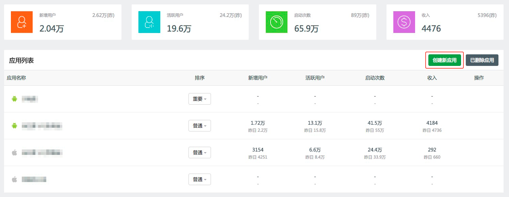
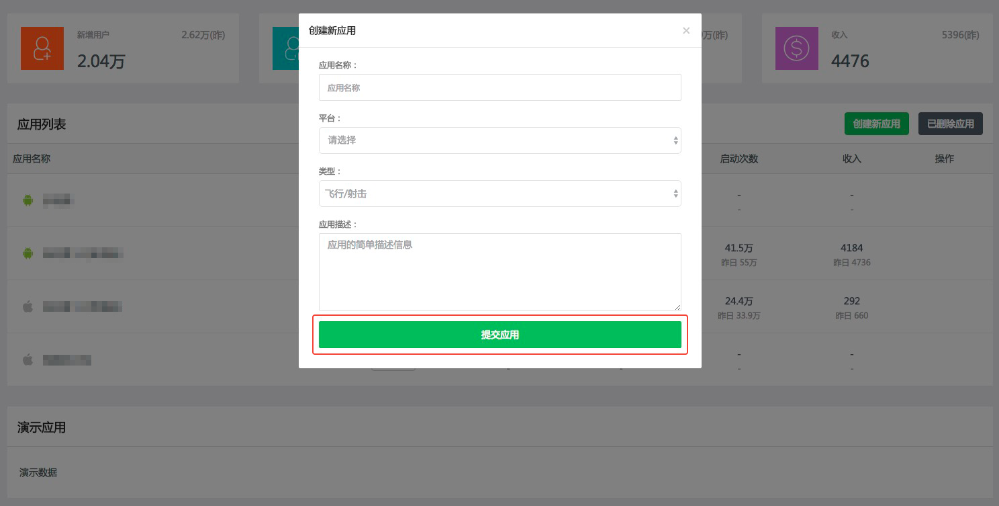
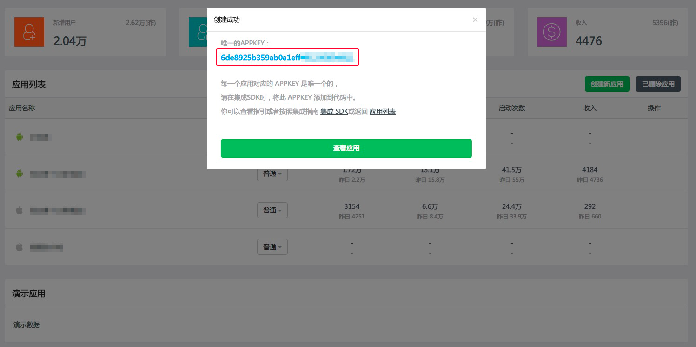
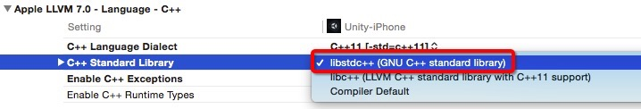
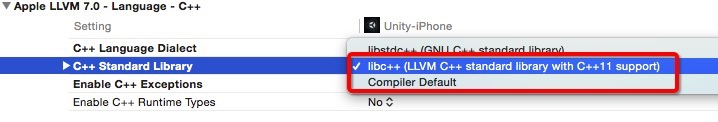
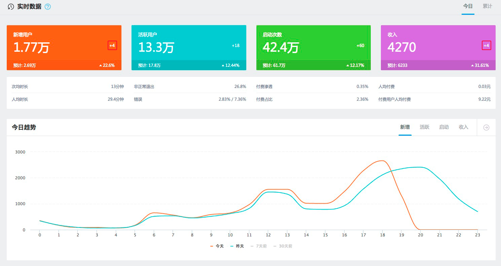
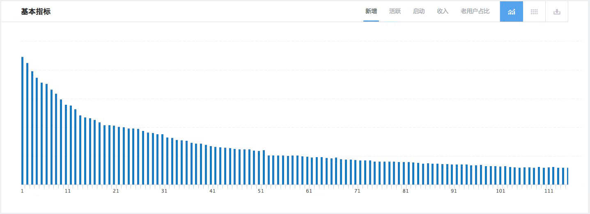
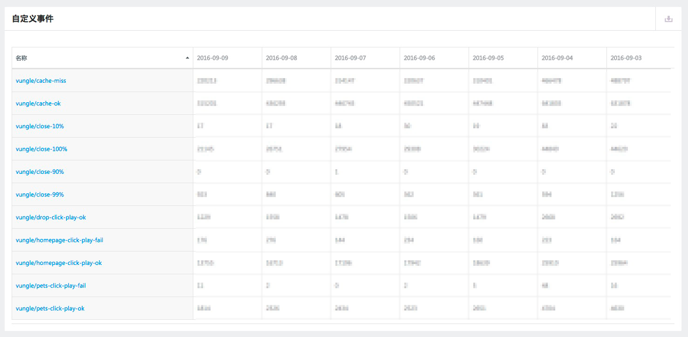
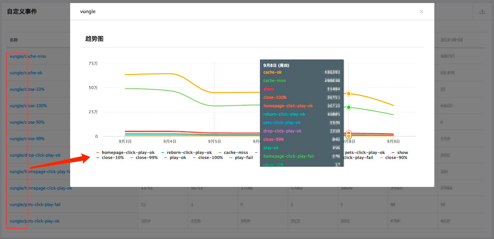

1，登录 天梯数据 后台，进入我的应用界面，在应用汇总窗口点击 “创建新应用”。如图：
2，输入应用的相关信息后，点击 “提交应用”，即可。如图：
3，得到唯一的 APPKEY，接入 SDK 时使用。如图：
以 Xcode 为例：
libs/ios/liblogger.a libs/ios/liblogger_c11.a AppLogger.h
在 liblogger.a 和 liblogger_c11.a 之间，根据你的编译设置选择一个，连同 AppLogger.h 放到工程项目目录下，并将 .a 和 .h 文件拖拽到项目工程中。
（liblogger.a 和 liblogger_c11.a 的选择详见下面的说明。）
由于开发者选用的 c++ 标准库可能有所不同，所以我们对 liblogger 也做了对应的区分，分别为：
2.1 如果使用 GNU C++ standard library (如下图)，使用 liblogger.a。
2.2 如果使用 LLVM C++ standard library (如下图)或者 Complier Default，使用 liblogger_c11.a。
在 TARGETS > Build Phases > Link Binary With Libraries 下添加下面四个 framework：
SystemConfiguration.framework CoreTelephony.framework Security.framework CFNetwork.framework
在 didFinishLaunchingWithOptions 或者 ViewController 的 viewDidLoad 下添加 AppLogger::init。
void init (const char* appId, const char* appChannel=NULL);
初始化数据统计服务
必须指定 appId 和 appChannel，通常指定 appChannel 为"AppStore"
在程序启动的时候调用初始化接口，仅在第一次调用时有效，确保在调用其他接口之前正确调用 init 接口
如果需要临时禁用天梯数据相关服务，不需要逐一注释相关代码，只需要注释掉 init 函数调用，天梯数据 将不会记录，保存，传输任何数据，所有接口调用直接忽略
现在可以登录 天梯数据 后台，然后运行您的游戏，即可实时看到当前启动游戏的记录。实时心跳数据，如图：
void onSubStart (const char* name);
进入一个关卡或页面
在进入一个关卡或页面时，调用 onSubStart 接口
onSubStart 事件接口可以帮助统计系统获得关卡 新增用户，活跃用户，启动次数，进入次数，离开次数，滞留人数，最大关卡，最后关卡 等各种指标数据。如图：
关卡/页面可以嵌套，但不可以交叉
onSubStart 的第一个参数 stage 是关卡的名称， 用版本号的形式。例如："1"; "2"; "2.1"; "3"; "3.2"; "3.3" ...， 如果是字母开始的名称（例如：“MainScene”），将作为页面统计
void onSubEnd (const char* name);
退出指定关卡或页面
在退出一个关卡或页面时，调用 onSubEnd 接口
onSubEnd 必须与 onSubStart 匹配
onSubEnd 不能用 STAGE_LAST 参数，必须指定和对应 onSubStart 一样的关卡名称
void onPassFail (bool bPass);
过关或失败
关卡过关或失败时，立即调用 onPassFail 接口
onPassFail 在 onSubStart 与 onSubEnd 之间调用
onPassFail 事件接口可以帮助统计系统获得关卡的难度等各种细节信息，例如，过关时间，失败时间，难度 等数据
关卡过关失败数据对于分析关卡数据非常有意义，强烈建议开发者及时并正确调用 onPassFail 接口
所有子事件缺省都算在最后关卡中（STAGE_LAST）
如果需要把子事件计算到特定关卡或页面，请指定子事件中的 stage 参数
void onBuy (const char* payService, const char* item, int count, float value
现金购买虚拟币， onBuy 事件接口提交的数据，将作为收入数据，在后端报表中用各种收入图表展现。
当用现金进行购买时，请调用 onBuy 事件接口 onBuy 事件缺省统计到最后关卡中，所以你可以看到各个关卡的各种与收入相关的数据，如，收入，新增付费用户，活跃付费用户，当天购买用户
payService: 支付服务类型，例如：支付宝, paypal, appstore, …
item: 购买的项目
count: 购买数量，通常是1
value: 购买总价
stage: 发生事件时的关卡位置，缺省为最后关卡（STAGE_LAST）
void onExchange (const char* item, int count, const char* stage = STAGE_LAST);
虚拟币兑换为道具
数据分析人员可以观察到各个关卡的兑换次数，兑换项目等详细数据，以及各个数据的分布状况
item: 兑换的项目
count: 兑换数量，通常是1
value: 购买总价
stage: 发生事件时的关卡位置，缺省为最后关卡（STAGE_LAST）
void onUse (const char* item, int count, const char* stage = STAGE_LAST);
使用道具或点数
item: 使用的物品(或点数)名称，例如道具名称
count: 使用的物品的数量
stage: 使用的位置，关卡或页面名称
void onCollect (const char* item, int count, const char* stage = STAGE_LAST);
收集点数/道具
item: 收集的物品(或点数)名称，例如道具名称
count: 收集的物品的数量
stage: 收集的位置，关卡或页面名称
void onReward (const char* item, int count, const char* stage = STAGE_LAST);
奖励虚拟币或道具
发生奖励行为时，立即调用 onReward 接口
item: 奖励的物品(或点数)名称，例如道具名称
count: 奖励的物品的数量
stage: 奖励的位置，关卡或页面名称
void onShare (const char* service, const char* item, const char* stage = STAGE_LAST);
分享到社交服务上
当用户进行分享操作时，立即调用 onShare 事件接口
service: 分享服务的名称，例如，weibo, qq, weixin, …
item: 分享的项目名称
stage: 分享的位置，关卡或页面名称
void onEvent (const char* name, const char* stage = STAGE_LAST);
用户自定义事件
自定义事件将以列表形式罗列出来，并显示最近几天的自定义事件变化
自定义事件可以是一个简单的名称，例如 dm_show，也可以是包含 / 的多级名称，例如 main/dm_show, main/dm_close, …
对于 main/dm_show 形式的事件，在统计报表中将把所有 main/ 开头的时间一起对比显示。
所以如果想对比观察一组事件，可以给这些事件一个一样的分组名称作为前缀，并用 / 分隔。
事件列表：
相同前缀的事件之间对比：
void enableOnlineConfig ();
启用在线参数同步功能，缺省不启用在线参数功能
在 init 接口后调用 enableOnlineConfig
在线参数在应用统计的后台管理，添加参数时可以指定当前参数的有效期。
客户端每次启动或者从后台切换到前台时自动更新在线参数，并且最小更新间隔为15分钟。
string getOnlineConfig (string key, string defaultValue="");
获得某个在线参数的具体数据，如果没有指定，返回 defaultValue
先调用 enableOnlineConfig，然后可以任意多次调用 getOnlineConfig
服务器可以指定在线参数的 key 和 数据，类型由客户端自己处理
服务器端可以指定在线参数的有效期，如果在有效期之外，相当于服务器没有定义该参数，返回缺省值
void clearStatus();
清除所有状态数据
在需要清除所有状态数据时，通常不需要调用
void setStatus(const char* key, int value, const char* distribution = NULL);
设置状态数据，服务器端将对状态数据自动分区统计，或根据指定的区统计
例如：玩家当前有多少宝石，用了多少宝石，收集了多少宝石等等这类长期累积的数据可以通过 setStatus 的接口统计。
通常在 init 之后尽快调用 setStatus 接口，把客户端的累计状态数据汇报给服务器
状态数据每天第一次启动的时候提交到服务器
状态数据设置后会保存下来，下次启动如果没有更新，自动使用之前设置的数据，除非重新设置或clearStatus
通常在应用启动后，客户端持续状态数据加载后立即调用 AppLogger::setStatus 接口
持续状态变更时也立即调用 AppLogger::setStatus 接口
SDK 在每天第一次启动时自动同步数据到服务器，不会导致数据重复统计
void enableCrashReport();
启用错误统计，捕捉应用中发生崩溃时的堆栈信息，用于定位程序中引起错误的代码，缺省为不启用崩溃统计
在 init 接口之后调用 enableCrashReport
需要把其他统计服务的错误收集功能关闭，例如：
友盟：setCrashReportEnabled
TalkingData：setExceptionReportEnabled
void setDebugLog (int mode, int level);
调试信息输出控制
mode 与 level 具体定义：
#define DEBUG_OFF 0 //不输出调试信息 #define DEBUG_LOGCAT 1 //输出到 logcat(用于联机调试) #define DEBUG_LOGFILE 2 //输出到 文件（applogger.log）, 用于脱机调试 #define DEBUG_LOGALL 3 //输出到 logcat 和 文件（applogger.log） #define DEBUG_LEVEL_VERBOSE 0 //输出所有级别调试信息 #define DEBUG_LEVEL_INFO 1 //输出INFO级别以上调试信息 #define DEBUG_LEVEL_WARN 2 //输出WARN级别以上调试信息 #define DEBUG_LEVEL_ERROR 3 //输出ERROR级别以上调试信息
开发者可以使用 AppDebug::info, AppDebug::warn, AppDebug::error 等接口输出调试信息到指定输出上